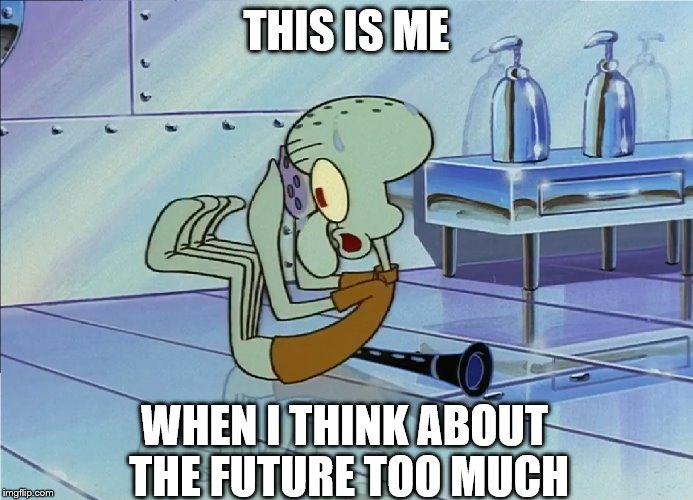

My Direction in the Future
If I am being completely honest, I do not really have a clear plan for the future. However, what I do know is that I want a career in the technology industry as I have always been facinated by how new things are made, what new ideas the industry comes up with and that since the age of six I have always been glued to a computer (usually playing games).
What I am interested in learning during my studies is finding ways to develop new technologies and applying them to the real world. I also want to participate in an industry based internship so that I can gain more practical skills and experience. Hopefully in a covid free world I can go on exchange to the US or Japan (mainly because of the food).
